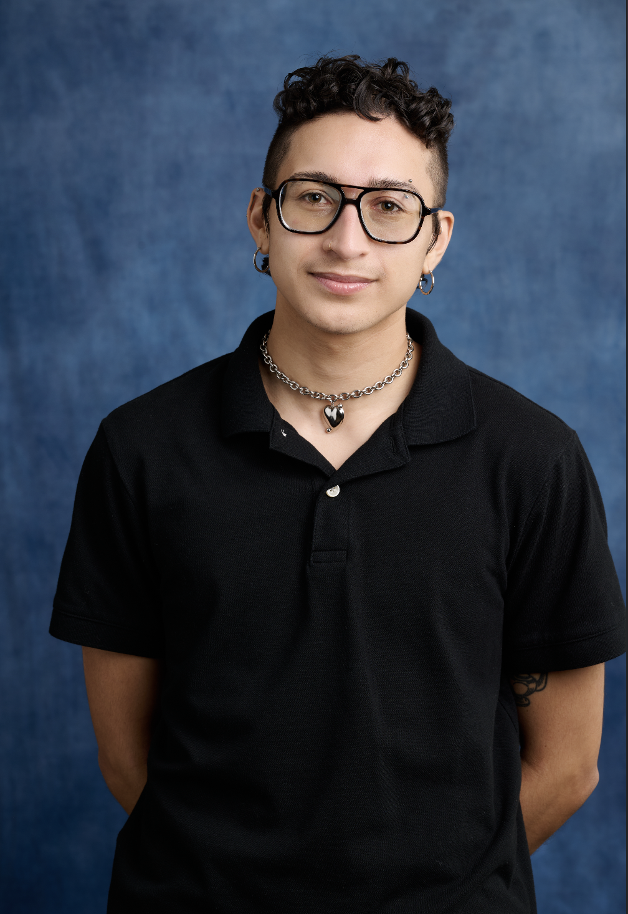

ABOUT
Hello, world! I am writer, artist, and digital archivist from Los Angeles whose practice interweaves memory, mythology, and multimedia technology to host stories of trans love and rebellion. My theatrical work has been featured at Celebration Theatre, The Joy Who Lived Festival, and Hollywood Fringe Fest, while my poetry has appeared in Mizna Journal, About Place Journal, and FRUITSLICE, among others. My plays include Another Birth (commissioned and produced by Celebration Theatre & Greenway Arts Alliance) and LOCAL PROPHETS: A Play of Near Collisions (The Joy Who Lived Festival). As an archivist, I have contributed to the preservation of born-digital and audiovisual collections at UCLA Library, the Los Angeles County Museum of Art, Skid Row History Museum, and Viet Rainbow of Orange County.

This is my very serious staff portrait.